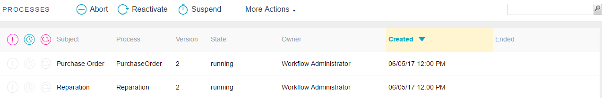
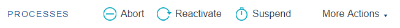
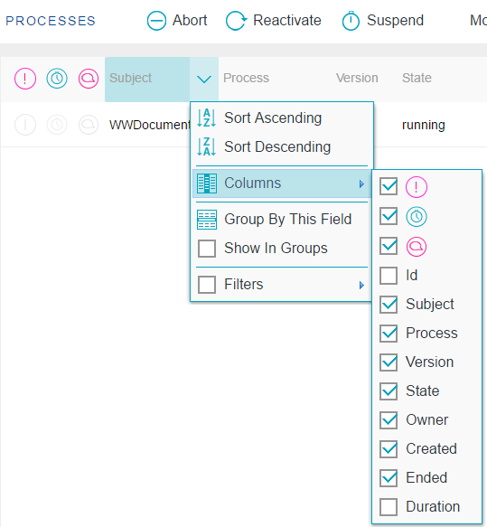

Through this application, the process administrator user can monitor and control the workflow processes.
The following figure shows the Process application interface:


- Abort: It allows quitting a group of active processes.
- Reactivate: It allows to reactivate a closed instance.
- Suspend: It allows suspending a group of processes that are in execution. This implies that the users will not be able to work with the tasks of these processes until their execution is resumed.
- Resume: It allows resuming the execution of a group of processes that were suspended.
- History: It allows to view the process history.
- High Priority: It allows to set a high priority to the process.
- Low Priority: It allows to set a low priority to the process.
- Change Deadline: It allows to change the deadline defined.
- Organizational Units: It allows to see the process organizational units.
- Application Data: It allows access a list with the current data of a specific process application data.
- Comments: It allows access the process comments.
- Migrate to Active Version: It allows to migrate a process instance to the active version.
- Clean Workflow History: It allows to choose the process to delete from the database using filters of dates and states.
It is associated with the apwfcleanhistory program that can be executed through the command line and achieve the same effect.

Priority: The column represented by the priority icon shows each task priority. The following options are used to indicate the priority:
- High priority
- Low priority
- If no icon is shown, the task priority is normal.
Warning: Some tasks may have a deadline to be completed. Through this column, the user can visualize the tasks with upcoming deadlines. The presence of the deadline icon in this column indicates that the corresponding task is near to reach its deadline.
Documents: The column represented with the clip icon indicates whether the task has associated documents or not. If it is so, the clip icon will be shown in this column. By clicking on this icon, the user accesses the Work with Documents application, which allows working with the documents associated to the task.
Comments: If a task has associated comments, the ballon icon is shown in this column. By clicking on the former icon a dialog will be displayed showing the comments associated to the task.
- Sort Ascending: It allows to sort the process instances by the name of the column selected. From A to Z.
- Sort Descending: It allows to sort the process instances by the name of the column selected. From Z to A.
- Columns: It allows to select the columns wanted to be visible.
Id
Subject: Process Instance subject
Process: Name of the process definition the process is based on.
Version: Process Definition version
State: The possible statuses are the following:
- Not_Initiated: the process was created but it has not been executed yet (the tasks have not been created yet).
- Suspended: the process was suspended. This implies that the users will not be able to execute the tasks associated to this process until the process execution is resumed.
- Executing: the process is in execution.
- Quitted: the process was quitted. This implies that the users will no longer be able to execute any task associated to this process.
- Completed: the process was completed normally. Every process task was completed.
- Finished: the process had a deadline to be completed and this deadline was reached.
Owner: Task assigned user
Created: Process creation date.
Ended: Process finalization date. This column will appear in blank for those tasks that are still active.
Duration: Process instance duration.
- Group by this field: It allows to group de process instances by the column selected
- Show in groups: It allows to group the process instances by the column selected.
- Filters: It allows to filter the process instances.
|